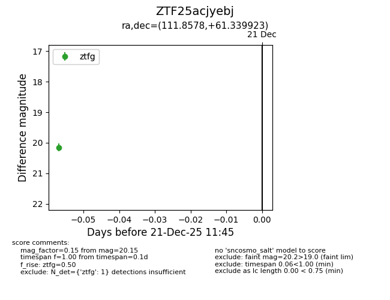
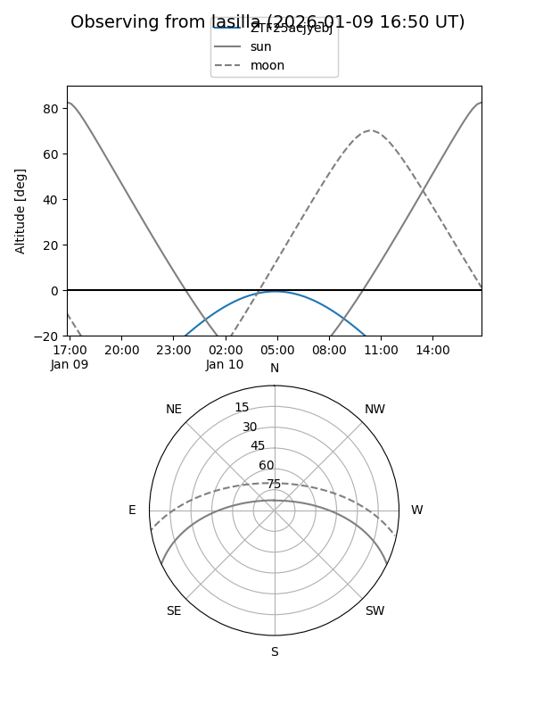
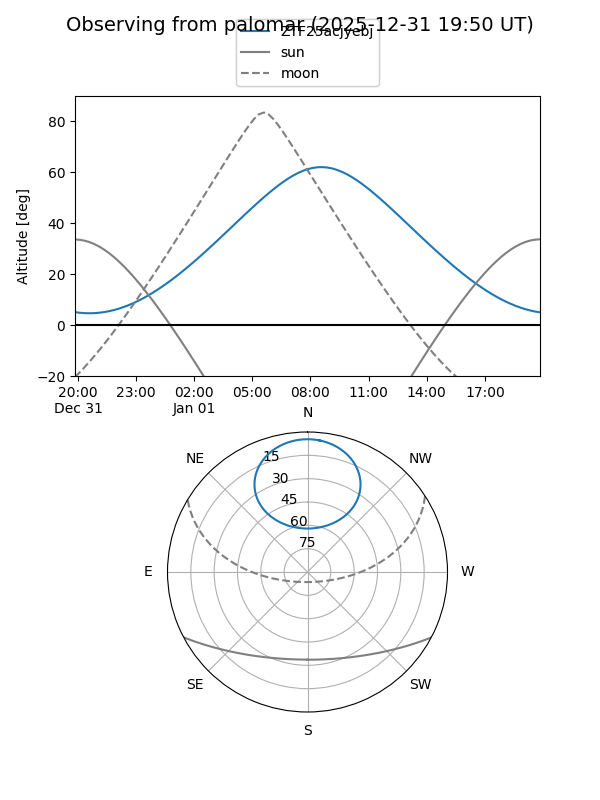

ZTF25acjyebj
Target ZTF25acjyebj at 2025-12-31 18:00
Aliases and brokers:
FINK: link
Lasair: link
ALeRCE: link
alt names
ZTF25acjyebj (ztf,fink_ztf)
Coordinates:
equatorial (ra, dec) = 111.8578,+61.33992
equatorial (HMS+DMS) = 07:27:25.88,+61:20:23.72
galactic (l, b) = (155.3217,+27.83189)
Flags:
Photometry:
last ztfg=20.15, ztfr=20.30
1 ztfg, 1 ztfr detections
Lightcurve

Visibility


Additional plots